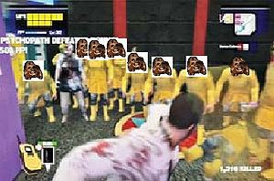

Dead Rising
 De: La Frikipedia, la enciclopedia extremadamente seria.
De: La Frikipedia, la enciclopedia extremadamente seria.
De la serie Videojuegos:
Dead Rising

consigan su propia tele!!!
| Desarrollado por:
|
Capbrón
|
| Distribuido por:
|
Topota madre games
|
| Diseñado por:
|
El fary
|
| Motor
|
1 pixel por hora
|
| Género(s)
|
Aburrimiento
|
| Fecha de lanzamiento:
|
carajo, xa soc aquí
|
| Modos de juego:
|
{{{modo_de_juego}}}
|
| Requisitos:
|
Abrir, meter y jugar
|
| Disponible en:
|
{{{disponible_en}}}
|
| Formatos:
|
E-Nvidia y en DVD
|
| Edades:
|
+99. Menores, acongojonamento. Maiores infarto.
|
| Puntuaciones:
|
-100
|
cereeeeebros!
Esto es un juego para la 360 que es un VPS (Very Patetic Person) en el que tus armas son demoledoras: Una guitarra, una sartén, un... ¿Como que una avispa?
Willamette
Un día, la ciudad de Willamette es rodeada por la Guardia Nacional. Mientras bloquea el tráfico aéreo, Fran Güest, famoso reportero... (Seamos sinceros, es un colgado con una cámara y que el objetivo del juego es encender la cámara) se cuela por la carretera en un "Seiscientos" pilotado por un borracho, el cual volverá por carretera a buscarle al cabo de 72 h. Pero el pequeño pueblo de 53.239 habitantes esta infestado de Zombies.
Sala de seguridad
Al llegar, Fran se encuentra varios supervivientes en la sala de seguridad. Vamos a describirlos:
- Dod Otis Wasinthetown: Conserje que pasa de los 90 y que tiene la mala costumbre de llamarte por el Walkie-Talkie cuando hai un psicópata (-Sin la p, sin la p. -Ah, me duele la _unta de la _olla) a punto de matarte.
- Jessica MiCarne: Agente del DHS (Desperfectos Humanos Solucionables). ¿Solo enrrolan a las más güapas?
- Brad: Agente del DHS al que parecen tirarle bastante las tendencias sadomasoquistas puesto que siempre lo hieren facilmente y es mas facil aun matarlo.
Primer roce con Carlitos Crêpes
Nada más salir de merensola, en el lugar donde destilan vino (Food Corto) te encuentras con un chalado que tiene mejor equipamiento que el ejército y empieza a tiros con Fran y Brad. Y encima cuando lo derrotas huye...
Mientras Brad y tu hablais una cosa, y decidís ir a salvar al Dr. Barnaby, que se esconde en En Trance Plaza. Curiosamente en el Bar Navy.
Los Psicópatas
- Carlitos Crêpes: Antagonista del juego. Tiene mmmmmmmmuuuuuuuuuyyyyyyyy mala ostia.
- Sabela Crêpes: hermana menor del antagonista. Tiene una Harley Davison. Y mmmmmuuuuyyy mala leche.
- Ana Cletus: Dueño de la armería. Lleva la cremallera abierta.
- Adam McDonalds: Payaso contratado para entretener a los niños. P.d.: Lleva dos motosierras.
- Sean Losk Esean: Lleva el manual de: Como lavar el cerebro. "Convence" a una muchedumbre y funda una nueva religión: El culto al Chuvaka.
- Cliff Putson: Ex-matavietnamitas, que al ver que murieron los Vietcongs, los confunde con los zombies y con Fran.
- Kent Brochaman: Joven fotógrafo. El dice que es la ostia. Pero es un puñetero imbécil.
- Yo Sleid: Policía que hai que matar. Su peso derrumbaría el centro comercial.
- Familia Hal-life: Penosos francotas que se fueron de la olla al ver que Hal-life es una M.
- Pal Carton: Friki con Kócteles Molotov. Cuando lo vences puedes dejar que le ardan los guevos o apagarle las llamas (Debería haber licencia para usar Kócteles... Ah, la hai).
- Estevan Chapamán: Gerente del supermercado. Esta más loco que Bush.
- Loro Chong: Confunde a Carlitos con un trozo de carne, y se lo pretende vender a Fran.
Loro y Stevan
Los Sobrevivientes
Es una perdida de tiempo rescatarlos, ya que son unos idiotas y no saben pelear.
- 1-Lalo Peluca - Es el piloto del Seiscientos. Conduce mal.
- 2-Carlitos Crepes - Villano. Hijo de puta.
- 3-Wingin Peterdaughter - Pendejo que muere cuando los zombies entran en el centro comercial.
- 4-Brillo Reynolds - Pendejo que muere cuando los zombies entran en el centro comercial.
- 5-Cristo Rines - Pendejo que muere cuando los zombies entran en el centro comercial
- 6-Dana Simas - Muere cuando los zombies entran en el centro comercial.
- 7-Freddo March - Muere cuando los zombies entran en el centro comercial.
- 8-Cata Peterdaughter - Pendeja que muere cuando los zombies entran en el centro comercial. Contucion cerebral
- 9-Linddi Marris - Pendeja que les abre amablemente la puerta a los zombies para rescatar a Malonna.
- 10-Fodd Mendez - Pendejo que muere cuando los zombies entran en el centro comercial.
- 11-Narc Llamarada - Pendejo que muere cuando los zombies entran en el centro comercial.
- 12-Ryan La Cardo - Pendejo que muere cuando los zombies entran en el centro comercial.
- 13-Verlene Bilis - Pendeja que muere cuando los zombies entran en el centro comercial.
- 14-Otis Putington - Viejo demasiado irritante.
- 15-Jessy MasCarne - Aspirante a bailarina Strip-Tease.
- 16-Brad Garrason - Negro que encuentras cuando vas a violar a carlito.
- 17-Prosser Bar Navy - Lo encuentras en el Bar Navy.
- 18-Sabela Crepes - Aspirante para bailarina Strip-Tease... y medica tambien.
- 19-Jefe Oscar - Tipo owneado en el tejado. Propenso a desmembramientos.
- 20-Natalika Oscar - Vieja owneada en el Tejado. Demasiado gorda
- 21-Billy Baldwin - Gay encontrado en la tienda "En el closet", salio de ahi y se volvio gay.
- 22-Kent Brochaman - Puto mamon tragando mierda en "Rostisadores Colombianos".
- 23-Ana Cletus - Vagabundo con escopeta.
- 24-Mr. James - Asesinado por el vagabundo.
- 25-Popi Richards - Defecando en el lago de "Leisure Park".
- 26-Fart Thompson - Tipo con problemas para controlar la ira en la mision “Parrillada A”.
- 27-Aaron Suck - Joto maricon en la misión “Parrillada B”.
- 28-Leia Einstein - Vieja melodramatica en la mision“Lamento Materno”. Propensa a desangrado. Es invalida.
- 29-Adam McDonalds - Sobrino de Ronald McDonalds en la mision “Fuera de Control... en la eyaculación”.
- 30-Homer Simpson - Hombre rescatado antes de ser violado por Adam.
- 31-Me Tronaka - Drogadicto en la misión “Porristas Japoneses”
- 32-Chingi Gitano - Ninfomano en la misión “Porristas Japoneses”
- 33-David Baileef - Hombre planta en Chorth Panza en la mision “Sombra de la Panza Chorte”.
- 34-Topa Aguas - Drogadicta encontrada fumando yerba en Mierdaland Panza.
- 35-Arroz Fool - Es el negro que no sabe manejar una pistola.
- 36-Cliff Putson - Mata-vietnamitas en la mision "Hombre de la cacha"
- 37-Yoch Manitas - Japonesio en un trio a lado del cadaver violado de Cliff.
- 38-Barbara Putterson - Vieja fea en un trio a lado del cadaver violado de Cliff.
- 39-Pinch Eatkins - Toxicomano en un trio a lado del cadaver violado de Cliff.
- 40-Wethear Tompkins - Puta encontrada fuera de "Kids Porning".
- 41-Putela Tompkins - Puta encontrada fuera de "Kids Porning".
- 42-Obeso Saltwork - Joto marico sin bolas encontrado en Al Chesca Panza en la mision “El Jotito”.
- 43-Ronald McDonald - Gordo encontrado en Pinch Sandwiches en Chafadise Panza.
- 44-Jennifer Gordaman - Puta siendo violada por el culto al Chuvaka.
- 45-Yo Sleid - Poli corrupta y gorda en la mision "Por encima del Mamey"
- 46-Llave Nelson - Rehen de Yo. Puta.
- 47-Lilly Tocino - Rehen de Yo. Puta
- 48-Kelly Carpintero - Rehen de Yo. Puta.
- 49-Janet Estrella - Rehen de Yo. Puta.
- 50-Sally Millas - Negra colgando del conejo Playboy en Mierdaland Plaza.
- 51-Steven Spilberg - Famoso director de cine colgando del conejo Playboy en Mierdaland Plaza.
- 52-Roger Hal-Life - Pedofilo Nerd en la mision “La Garcha del Francotirador”.
- 53-Jack Hal-Life - Pedofilo Pandillero en la mision “La Garcha del Francotirador”.
- 54-Thomas Hal-Life - Pedofilo con Sindrome Down en la mision “La Garcha del Francotirador”.
- 55-Wayne Parednegra – Gordo Anti-Social en En Trance Panza en la mision “La Garcha del Francotirador”.
- 56-Jodi Chu - Asiatica cachonda en la Mision "La mujer que no consiguio hacerlo"
- 57-Raquelona Decaer - Amiga lesbiana de Jodi, mantuvieron relaciones sexuales.
- 58-Pink Floyd - Viejillo fan del rock en la mision "Amante de la mamadas".
- 59-Blacky Johnson - Negro en esmoquin que trai un escopeton.
- 60-Sean Losk Esean - Violador encontrado en la mision “Un Grupo Peludo”
- 61-Rayo Gamma - Deforme rehen en la mision “Un Grupo Peludo”.
- 62-Nathan Cress - El tio de Harry Potter en la mision “Un Grupo Peludo”.
- 63-Michelle Feliz - Negra siendo esclavizada limpiando hongos de los pies en la mision “Un Grupo Peludo”.
- 64-Beth Shake - Peinado de Hongo siendo esclavizada limpiando baños en “Un Grupo Peludo”.
- 65-Porni Jones - Mujer con un fuerte dolor en la vagina. Puta y modelo Playboy en la mison "Un Grupo Peludo".
- 66-Don Gil Jimenez - Viejo pedo encontrado en Porn Court.
- 67-Estilos Brett - Moja en un trio a lado del cadaver de Ana Cletus.
- 68-Jonathan Picazon - Pelon en un trio al lado del cadaver de Ana Cletus.
- 69-Putyssa Laurent - Puta en un trio al lado del cadaver de Ana Cletus. Esta es la número 69, fue encontrada haciendo esa posicion en el trio.
- 70-Pal Carton - Friki con molotovs violando viejas en Mierdaland Panza. Puedes salvarlo o dejar que le ardan los huevos y se quede esteril. Si, lo segundo es mejor.
- 71-Mindy Panadera - Mujer siendo violada por Pal en la misión “Punk de Pito Largo”.
- 72-Debbie Chili - Mujer siendo violada por Pal en la misión “Punk de Pito Largo”.
- 73-Leroy Stitch - Deforme en Mierdalandland Panza durante la misión “El Deforme Enfermo... de Zida”.
- 74-Susanita Wash - Fosil encontrada en la pelota de los huevos..
- 75-Simonacha Cuervonegro - No, no es negra. Es la que tiene Zida
- 76-Cholo Hawthorne - Cholo rehen de Kent en la misión “Orgullo de Pendejo”.
- 77-Estevan Chapaman - Neurotico en el mini super con Sabela como rehen siendo violada en un carrito.
- 78-Loro Chongo - Gordo japones triturando a Carlitos en el estacionamiento de mierda.
2º Roce con Carlito
El viejo Barnavy lla chochea. Se niega a ir a la sala de seguridad si no le hacen la "sirugiá". Pero al segundo día, y de madrugada, Carlito lo rapta y se arma un tiroteo que despierta a Fran, que como consecuencia, hiere a Carlito de un tiro a Carlito. Aprovechando, Brad se lleva a la sala de seguridad a Barnavy, pero al entrar se golpea la pierna y Fran tiene que ir a por medicinas.
Cuando va a por medicinas se encuentra a un tipo muuuuuuuy simpático: Stevan... Laaaaargooooooo deeeee miiiii tiiiiieeeeeeeeennnddaaaaaaaaaaaaaaaaaaaaaaaaaaaaaaaaaaaaa!!!!!!!
La prima
Cuando le preguntan a Barnavy que carajo pasa y porqué falta algo de "vidilla" en la ciudad, Fran roncaba, por lo cual no se enteró y tubo que buscar a quien lo sepa. Decide preguntárselo a una tipa con una Harley Davison y una pistola, a ver que eggs pasa.
Pero resulta que esta de Mal humor (vamos, como siempre) y decide atropellar a Fran. Y lo habría conseguido de no haber intentado pasar por encima de la cabeza. Y mira que hay baches gordos...
Perro y ciclista
La Harley Davison se petó y la tipa solo se le ocurre darle una patada en los eggs a Fran (craso error, no tiene). Tras hablar acuerdan una entrevista con Carlito a las 12:00 Am (antes de merendar). Pero cuando le pregunta a Carlito (y con sus buenos modales) llega a la reunión con el hombro ensangrentado. Cuando Fran le pregunta, le dice que Carlito, con buenas intenciones, con sus bendiciones, y el buen humor de la familia, le pego un tiro entre ceja y ceja, y, que con la buena puntería de la familia, falló.
Fran decide llevársela al huerto, pero los agentes del DHS no le dejan hasta que la interrogen, asin que Fran se sale a fumarse yerba.
El culto al Chuvaka
Cuando sale, Fran se encuentra al cura medio chalado, el cual funda una religion a la que Fran es atraído, en la que tos llevan una careta de Chuvaka, pero como no le admiten, Fran se enfada...
Tras cargarse al Cewcura, Fran se encuentra unos supervivientes (entre ellos una puta).
 Fran puede ser muuuuuy imbécil
Al volver, resulta que Barnavy se drogó tanto que acabó convertido en zombie, pero antes, y con los efectos del alcohol, confesó que inventó un prototipo de oveja "ferpecta", pero que le salió mal y empezó a auto reproducirse de forma asexual y convirtió en Zombies a toda la población de Santa Chaveta (lugar donde vivían Carlito y Sabela), la cual fue exterminada (supervivientes y todo) por los marines (ya, ahora tambien luchan en tierra los marines), y que por vengarse, Carlito soltó a la oveja por Willamette.
El pan de Carlito (¿o era plan?)
Carlito empieza a hablar con mega afonía (gritando desde el escondite) que Sabela no revele que se va a cargar todo el mundo (o lo que es lo mismo: E.E.U.U.) incendiando el sótano con gaseosa y unas bombas metidas en carretas concentradas en puntos estratégicos (una volcada, otra con la bomba estropeada, otra bloqueando la salida por la que Carlito pretende huír,otra esta sin activar y la otra es de juguete).
Entonces Fran empieza a patear como si le fuese la vida en ello (y le va) y, mientras que coje las bombas que no furrulan, Brad coje las que explotan, pero al echar las bombas fuera aparece Gollum que le arrebata el anillo único y... Espera, ¿esto no era el Dead Rising? Bueno, pues aparece Carlito, que lo hiere de muerte y lo deja a merced de los zombies...
Mientras, Fran acaba de pasársele la resaca del otro día y se pregunta que hace allí, y de pronto se acuerda. Va adonde Brad, pero el mu hajo de puta sea muerto y ka es un zombie, pero antes de morirse le dice: "No se lo digas a Jessi, dile que me he ido a Leroy Merlín, a las rebajas".
El bloqueo de la señal
Una vez fracasado el plan de Carlos, Sabela sugiere ir a el escondite de Carlito, para ver su portatil en busca de otro sistema de cargarse el mundo (y de la pornografía infantil que se descargo Carlito).
Una vez allí, Sabela intenta sabotear la contraseña, y Fran recibe una llamada de Jessi por el Walki-Talki, en la que le dice que ha visto a Carlito por la carnicería, así que Fran va a investigar. Pero cuando llega, Carlito ha sido convertido en carne picada, así que le pregunta al carnicero que dijo antes de morir, y le dice: "Drink wishky, my friend. La contraseña es ¡Qué pacha mamá!"
Tras darle la contraseña a Sabela, esta desconecta el aparato de bloqueo de la señal, y entonces Jessi contacta con el cuartel, pero le dicen que a tomar por saco y que los van a matar a todos por que saben que fue el gobierno norteamericano el culpable y bla, bla, bla...
El seiscientos
Tres días despues (2´3 en el calendario de Fran [Sí es un poco rarito]) Fran va a ver que pasa con el seiscientos, pero el conductor lleva un zombie, el cual mata al conductor y el seiscientos se peta con la torre del reloj, y entonces a Fran le da un patatús. Espera, me olvido algo... Jessi ha muerto. ¡Por qué no Otis!
Modo Prórroga de Penalti
Entonces aparece Sabela, que salva a Fran en el último momento. En este modo, tienes que evitar convertirte en zombie, tomando una tostada con mantequilla zombie. Lo raro es que Fran, hasta entonces, no daba señales del virus... ¿Y como lo cogió? No se sabe, pero creo que por comer la carne de los zombies. Tambien se sabe que Carlito drogó antes de soltar la oveja asesina a un zombie, que abuso sexualmente de 50 chavales repartidos por todos los estados unidos.
El caso del Zida
El Zida es una rara combinacion entre Sida y Zombitis, desgarciadamente Fran se contagio de esto en el Modo Prorroga Penalti, ya que le dio patapus y casi se lo tiraba un zombi, pero en eso llego Sabela y lo rescato disparandole al zombie, para su suerte, a Fran le cai sangre del zombi en el ojo, por lo que se contagia de zombitis y cae desmayado.
Sabela lo rescata y lo lleva a un lugar seguro y aprovechando que esta dormido, Sabela se tira Fran contagiandolo del herpes genital Sida de Sabela, por lo que ya tiene las 2 enfermedades combinadas y ahora padece de Zida.
Fran vs. Maderos
Los Swat han ocupado todo el centro comercial y matado a casi todos los zombies. A falta de zombies, buenos son maderos. Pero cuando te intentas largar, te sale un tanque experimental XJ_ETC, con propulsion a partículas de monociclo (vamos, que si le estornudas sale por los aires).
Al derrotarlo te sale un señor mu majo que recibió clases particulares de pilotaje de Bruce Willis, de Kung-fumando por Bruce Lee, de mala ostia de Chuck Norris y de gilipollez de George W. Bush, por algo es el jefe final. Al matarlo, a Fran le dan alucinaciones y se convierte en Hulk (Bueno, en realidad le da una sobredosis y se muere).
Sabias que...?
- ...es ilegal matar zombies en Willamette?
- ...Chuck Norris desbloqueó el final "N" donde Frank se tira Jessica y a Isabela al mismo tiempo?
- ...Todos en Willamette son unos boludos?
- ...Adam el payaso hacia fiestas en la casa de Chuck Norris?
- ...Tomarle Fotos a los zombie es tipico de un friki?
- ...El Walkie-Talkie de Frank es Marca Norris... Nunca se le acaban las pilas, y su alcance es de 500 millones de kilometros.
- ...Frank Nunca supo como recargar un arma...
- ...Frank no defeco en 72 horas?
- ...Ni orino...
- ...El Fary fue el que mando a Frank a Willamette?
- ...Cuando los zombies invandan tu hogar, tu eres el primero al que se van a comer?
- ...Despues a tu perro...
- ...En Willamette solo venden 10.000 copias del mismo CD?
- ...Gibson demandó a Frank por andar rompiendo sus guitarras?
- ...Este juego esta hecho por zombies que tienen su sede en un supermercado de polonia?
- ...El payaso esquizofrenico es sobrino de Ronald Mcdonall y esta ennchufado en el supermercado por el?
- ... Van a hacer dos secuelas que se titularan "dead risind terror en el cuarto de baño" y "dead rising los zombies han invadido mercadona"?
- ...La abeja infectazombies es en ralidad la madre de la abeja maya?
- ...la sintonia chorra del supermercado la compuso beethoven antes de morir?
- ...Chuck norris se paso el juego sin entran en el supermercado?
|
|
 Shooter Shooter
 Terror Terror
 Velocidad Velocidad
 Rol Rol
 Estrategia Estrategia
 Aventuras Aventuras
 Fight! Fight!
 Clásicos Clásicos
 Deportivos Deportivos
 Aventura gráfica Aventura gráfica
 Novela visual Novela visual
 Personajes de videojuegos Personajes de videojuegos
|
Autor(es):
- Nexo
- Doctor grijander
- Frikiman
- Matagrunts
- Pocholito
- Mataphazon
- Dark temptation
- E1324
- Kevrochi
- GraySnake
Frikipedia 2005-2016, Licencia
GFDL 1.2 - Extraído por FrikiLeaks